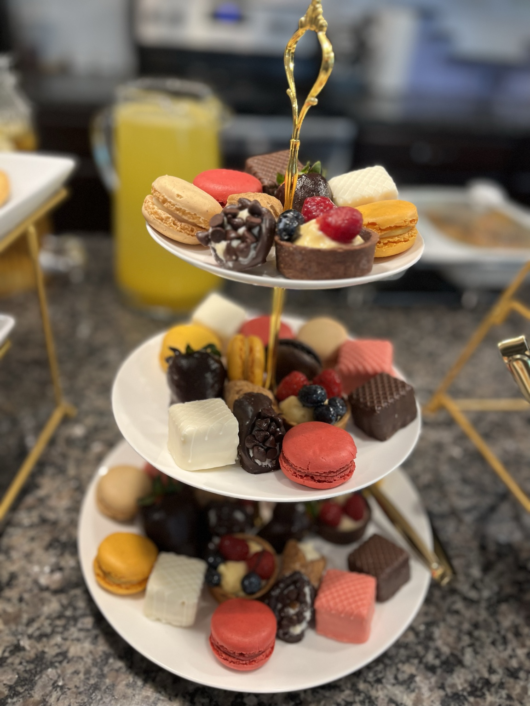
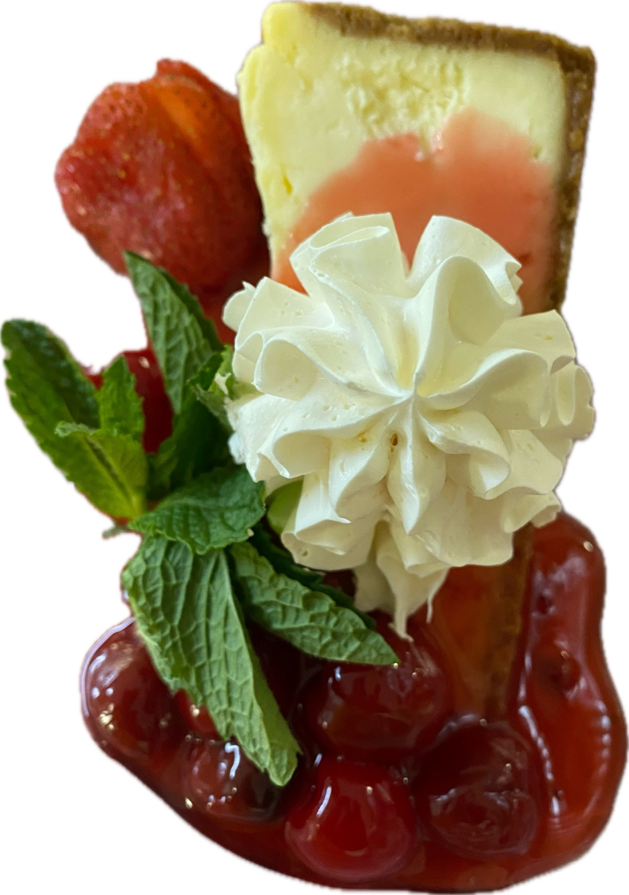
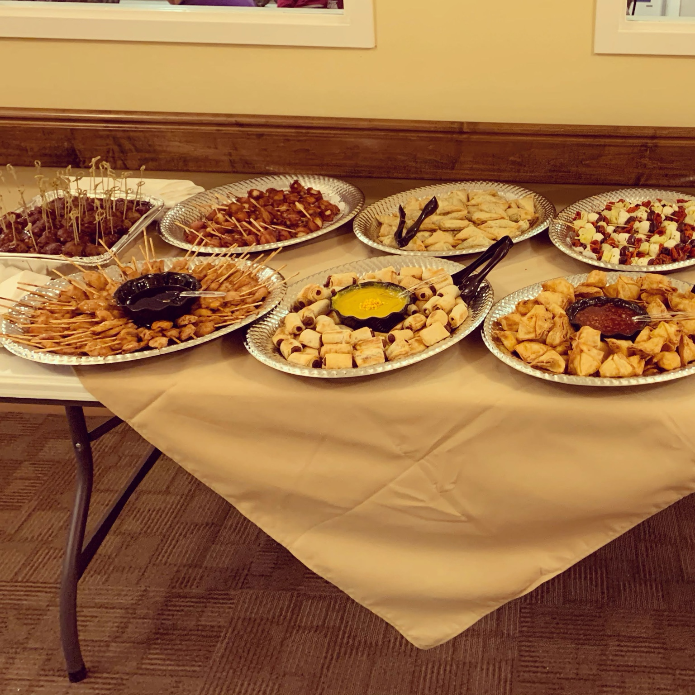

01
Private Chef Experiences
Intimate, custom dining created exclusively for your table, your guests and your vision.
 Cape V of LKNSignature Edition
Cape V of LKNSignature Edition
Cape V of LKN · Lake Norman
Inspired by the ocean. Crafted with passion. Served with elegance.

The Culinary Vision
Chef Nic creates from instinct, heritage and heart—transforming every gathering into an experience that feels personal, expressive and unforgettable.
Rooted in Cape Verdean soul, shaped by New England coastal tradition and brought to life with fearless imagination, Cape V of LKN is not confined to one cuisine or one expected way of doing things. Every menu begins as possibility. Every plate becomes a canvas.
“I don’t chase trends. I don’t dream in black and white. I dream in food.”Chef Nic
The Cape V Philosophy
Luxury is not about following what is expected. It is the confidence to create something original, the discipline to execute it beautifully and the hospitality to make every guest feel celebrated.
Signature Experiences
Intimate, custom dining created exclusively for your table, your guests and your vision.

Seafood-forward celebrations shaped by premium ingredients, soulful flavor and refined presentation.

Elegant bites, abundant displays and effortless hospitality for gatherings designed to flow.

Joyful menus that move beyond the ordinary—from elevated brunch to beautifully styled occasions.

Artful boards and tables composed with texture, color and an eye for unforgettable presentation.

Layered, polished dessert moments that bring beauty and delight to the final course.
Fearless by Design
Whole roasted fish as the centerpiece. Cape Verdean flavors beside timeless classics. A dessert tower that becomes part of the room. Cape V brings confidence, artistry and surprise to every occasion.

The Portfolio
Coastal, soulful, colorful and never afraid to move beyond the expected.



Every menu is a blank canvas.
Begin Your Experience
Share your event, guest count and culinary vision. Every inquiry begins with a conversation and every menu is thoughtfully designed around you.